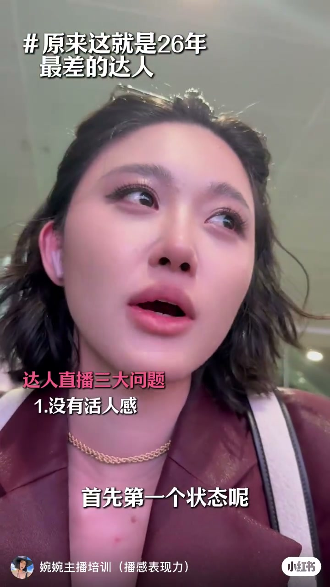
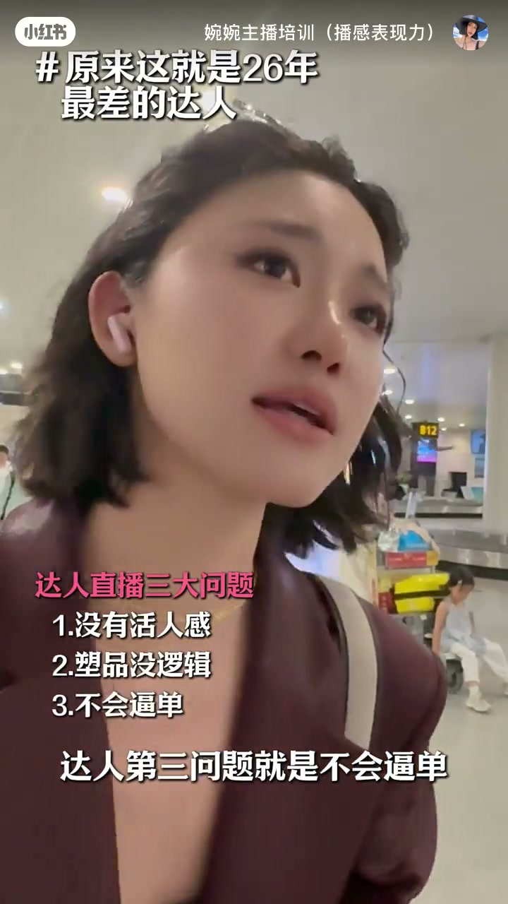

内容要点
一支 34 秒的反面教材盘点。UP 主「婉婉主播培训」列出 26 年最差达人的三个特征：①状态要么很平要么僵硬，拍视频不需要控场但直播需要很强的控场能力；②话术没有逻辑、只会念产品参数，像产品说明书——短视频里活人感很强的人一开播就变机械说明书，转化一定差；③不会逼单不敢逼单，「最后两单最后三单」说得生硬。结论：2026 年达人一定要把能力拎起来。
知识结构
最差达人的状态要么很平、要么僵硬（尬），没有控场的感觉。拍视频不需要控场，但直播需要很强的控场能力。
话术没有逻辑章法，一直在讲产品参数，像产品说明书，粉丝看到完全没有人情味。话术没人情味，转化一定差——短视频活人感强的人，一开播变机械说明书，观众接受不了。
不会逼单、不敢逼单，逼单非常生硬。「最后两单最后三单」观众一听就很生硬。2026 年达人一定要把能力拎起来。
26 年最差达人的三个标签：状态平尬无控场、话术像说明书没人情味、逼单生硬不会来事。这三个问题全部指向同一个词——直播能力，而不是镜头前的颜值或口才。
00:00-00:07状态：平、尬、没有控场感
视频用提问开场：「最差的达人是怎么样？」第一个问题就出在状态上——「要么很平，要么扎扎（尬）实实」，两种情况都没有控场的感觉。
UP 主点出根源：拍短视频并不需要控场，可以剪、可以重拍；但直播是连续、实时的，「直播需要很强的控场能力」。把短视频的松弛带进直播，控场力不足就暴露出来。

00:08-00:24话术：像产品说明书，没有人情味
第二个问题在话术：「话术没有逻辑、没有章法，就一直在讲产品参数，像产品说明书。」参数堆砌没有叙述结构，粉丝听到的是数据而不是内容。
更致命的是没有人情味：「如果说一个达人话术没有人情味，他的转化一定会差的。」UP 主用对比说明反差——「大家平常看他短视频，你觉得他是一个活人感很强的人，但是一直播呢，就变成一个机械的产品说明书，很多观众是接受不了的」。
00:25-00:34逼单：不会逼、不敢逼、逼得生硬
第三个问题集中在转化环节：「不会逼单、不敢逼单，逼单非常生硬。」
UP 主用一句典型的生硬话术示范：「最后两单最后三单」，观众一听就出戏。逼单不是喊口号，需要节奏、情绪和理由支撑。
结尾是本期核心结论：「2026 年达人一定要把能力拎起来」——能力是关键变量。

完整转录（26段）
以下文本由 Whisper medium 模型自动转录，可能存在少量识别误差，已尽可能修正。
最差的打人是怎么样的
首先第一个状态呢
要么很平
要么扎扎实实
他们是没有控场的感觉的
因为他们拍视频并不需要控场
但直播需要很强的控场能力
第二个就是书品没有逻辑
书品没有账户
就一直在讲场品参数
像场品说明书
粉丝看到它就完全没有人情味
如果说一个打人书品没有人情味
他的转换一定会差的
你知道吗
就是大家平常看他短视频
你觉得他是一个活人感很强的人
但是一直播呢
就变成一个机械的场品说明书
很多观众是接受不了的
咱们第三个问题就是
不会逼单不敢逼单
逼单非常生硬
最后两单最后三单
三人一听出来就非常的生硬
2026年打人一定要把能力拎起来